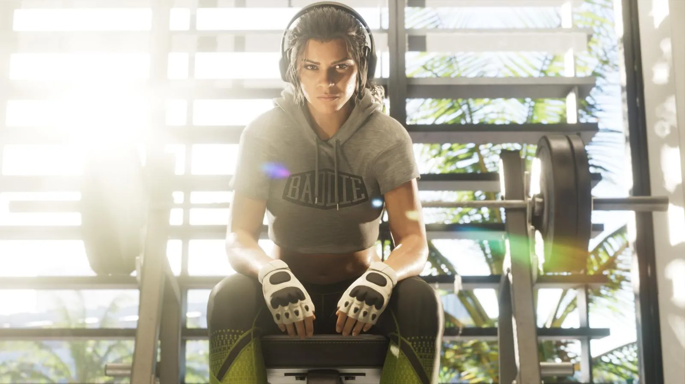
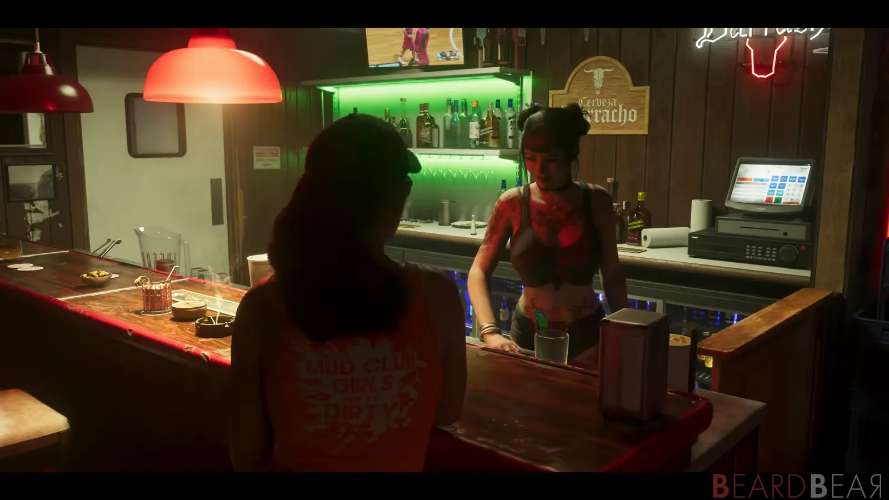
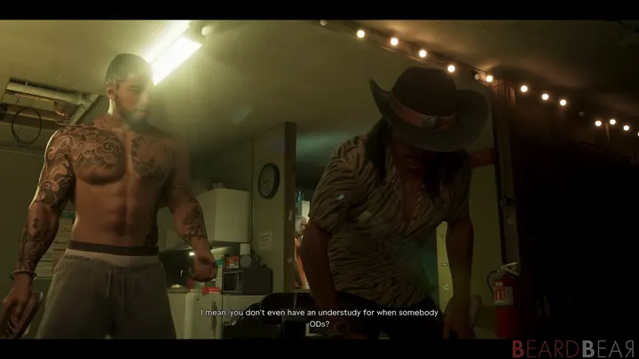
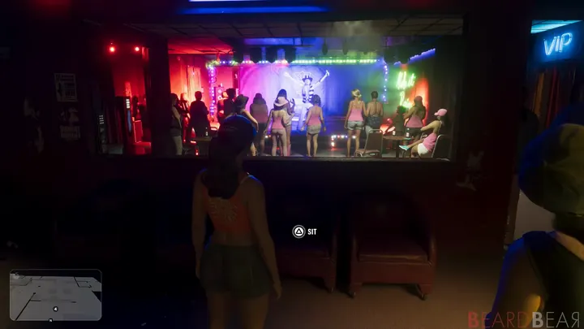
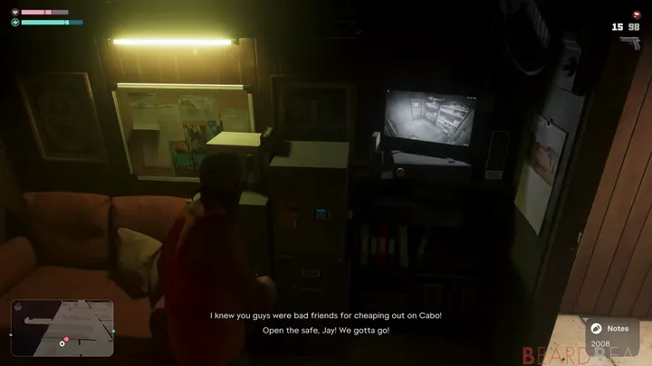
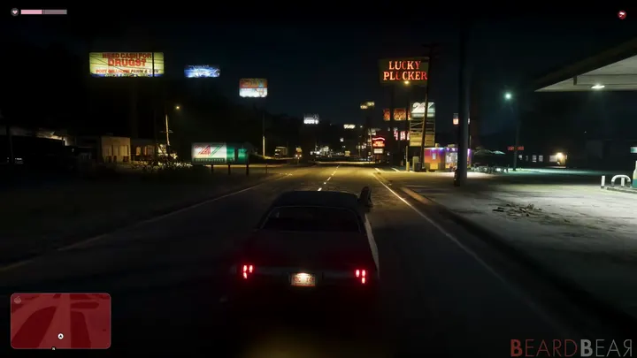
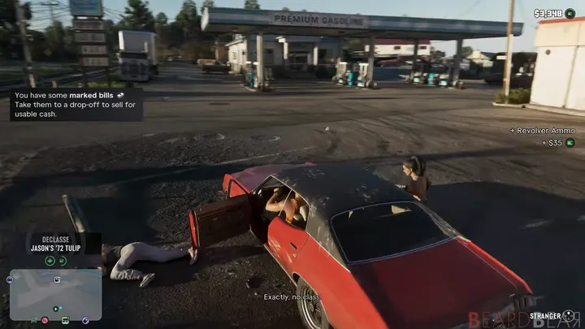

Afternoon Delight: прохождение миссии GTA 6
Опубликовано:

Коротко
- Вики поняла, кто стоит за ограблениями в округе, и предлагает паре обчистить сейф её босса Фрэнки Делайта в клубе Delights в «дамский вечер». В миссии есть забавный выбор — станцевать на сцене или нет: он меняет ход ограбления, но не итог.
- Глава 2, миссия 10 из 11. Играем за: Джейсон и Лусия.
- Награда: $10 000 на BuckMe на следующий день.
Миссия коротко
| Глава | 2. Paradise Lost |
| Номер в сюжете | 10 |
| Играем за | Джейсон и Лусия |
| Кто даёт | Вики |
| Где начинается | клуб Delights, Port Gellhorn |
| Условие | Coffee Break, другие текущие миссии и звонок Вики |
| Награда | $10 000 на BuckMe на следующий день |
| Переиграть | нельзя — сохраняйтесь вручную |

Где начинается
Прохождение по шагам
- Найдите вход за кулисы. Если приехать одному, напарника вызовут автоматически. Вышибала пускает только Лусию, а Джейсону надо перелезть через забор за клубом, когда охрана отойдёт, и зайти в гримёрку танцоров.
- Выбор: танцор Марио позовёт Джейсона на сцену. «Помочь» или «Не помогать» — итог одинаковый, меняется путь.
- Если отказаться: Джейсон стреляет в потолок, пара идёт к сейфу (код 2008) и прорывается наружу; байкеры преследуют активнее, а потом сразу встреча с Вики в доках.
- Если согласиться: Джейсон танцует на сцене, Лусия идёт к сейфу одна, её ловит охрана — Джейсон её выручает. После побега придётся купить Джейсону новую одежду.
- Уходите от байкеров — погоня несложная.
- Отдайте сумку Вики.










Советы
- Код сейфа Delights — 2008. Вики присылает его в сообщении, он сохраняется в заметках телефона.
- Сейф — в углу кабинета, рядом с картотекой и книжной полкой.
- Вариант с танцем длиннее, но в нём больше сцен и диалогов; байкеры в этом случае успевают позвать меньше подкрепления.
Подробности и секреты
- Вики платит $10 000 через BuckMe на следующий день при любом выборе (Magic Game World, GTABase).
- По данным GTABase, ещё как минимум $1 800 наличными можно получить от Фрэнки и Марио или из кабинета.
- Открытый сейф поднимает на ноги всю охрану клуба (GTABase).
- Миссия заканчивается встречей с Вики на причале; дальше — Checking Out (GTA Boss, Outputlag).
Что можно пропустить
Выбор со сценой меняет только сцены и путь, не награду.
Частые вопросы
Какой код сейфа в Afternoon Delight?
2008.
Танцевать ли Джейсону в Afternoon Delight?
На награду ($10 000) это не влияет — меняются только сцены и маршрут.
Источники: PowerPyx, «GTA 6 Afternoon Delight (Rob Vicki’s Boss) Walkthrough», 19.11.2026; PC Gamer, «GTA 6 mission list», 19.11.2026; VGC, GTABase, Magic Game World, Tech4Gamers, GTA Boss, Outputlag, games.gg, MetaForge, gta6box — Afternoon Delight, 19–28.11.2026. Кнопки указаны для PS5, в скобках — Xbox. Названия миссий — как в английской версии игры.